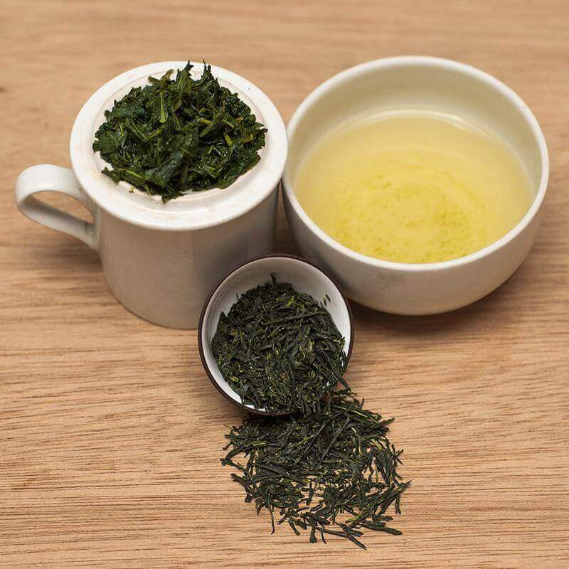

Types
Types

Japanese
Green Tea
Japanese Green Tea
Sencha
Sencha is by far the most common variety, accounting for about 70% of tea in Japan. This style of tea is comprised solely of the leaves of the plant. Sencha is usually associated with a soft sweetness, mild astringency, and a mix of aromas from flowery to seaweed. The quality varies depending on where it’s from, when it was harvested, and the techniques used to process it.
One of the most common ways to vary the flavor outcome is to adjust the amount of time Sencha is steamed. A short steaming of about 20-30 seconds will result in a light, refreshing green tea called Asamushi. A long steam of 40-120 seconds, known as Fukamushi, will make a dark colored tea with strong and more astringent flavors.
Gyokuro
Gyokuro, often called the “champagne” of Japanese green tea, accounts for only about 1% of Japan’s tea production. Despite the small quantity, it is considered the most premium of all Japanese tea. Its sweet flavor is attributed to its high content of theanine, an amino acid in the same family as caffeine.
These high levels of theanine come from the way Gyokuro is made. Gyokuro is known as a “shade tea”. This means that 20 days before harvest, all of the plants are covered and completely protected from the sun. This shaded period drastically changes the outcome. The result is a flavor that is sweet and mellow, yet complex and long-lasting.
Kabuse-cha
Kabuse-cha is the middle point between Sencha and Gyokuro. Also a “shade tea”, Kabuse-cha usually only spends around 10 days protected from the sun pre-harvest. The result is a lighter flavor than a Sencha, but not as sweet as a Gyokuro.
Matcha
Matcha is a powdered Japanese green tea. Originally used for tea ceremonies, its use has now spread to all forms of consumables. You can find Matcha in cakes, candies, coffee drinks, and in many other places. Its flavor is widely associated as the “green tea” flavor and has become quite popular around the world.
Matcha is made from a variety called Tencha, which is used almost exclusively to make Matcha. Tencha, like Gyokuro, is a “shade tea”. After being steamed and dried, the leaves are processed to only contain the flesh, without the stems or nerves of the leaf. At this point it is ground up into a powder, making Matcha.
Hojicha
Hojicha is a roasted green tea. It is usually made from Bancha, a low-quality Sencha. Hojicha is considered an everyday tea and is usually drank after dinner since it has a low caffeine content. It has a brown color and a strong, barley like flavor.
Kukicha
Kukicha literally means “twig tea”, and much like the name implies it is made from a mix of leaves and twigs from the tea plant. In the past this tea was considered the poor man’s tea, but in recent years it has gained popularity due to its buttery and rich flavors.
Genmaicha
Genmaicha is a mix of Bancha and toasted brown rice. This tea is another example of the poor man’s tea. To make the tea cheaper and last longer, the lower classes in Japan used to add twigs or toasted rice to the tea. This tradition has been kept around since Genmaicha has gained popularity. The toasted rice gives the green tea a pleasant, nutty flavor. Genmaicha is frequently mixed with Matcha as well.